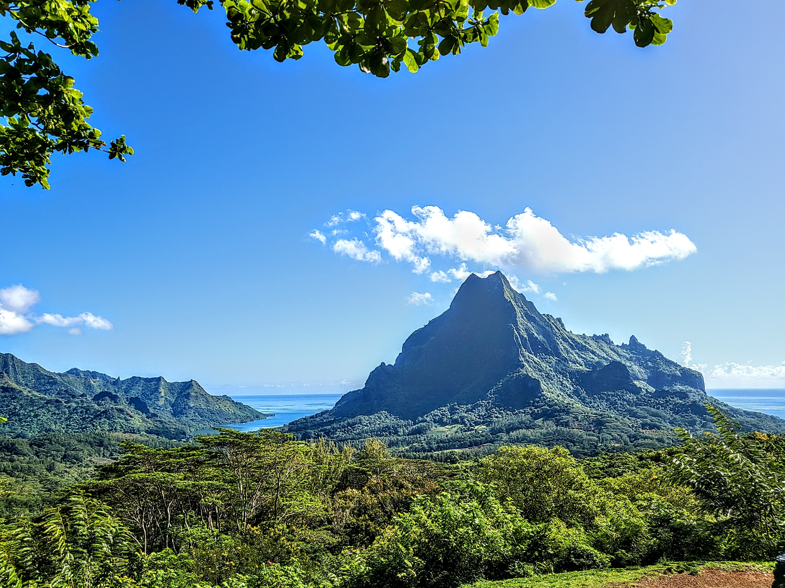
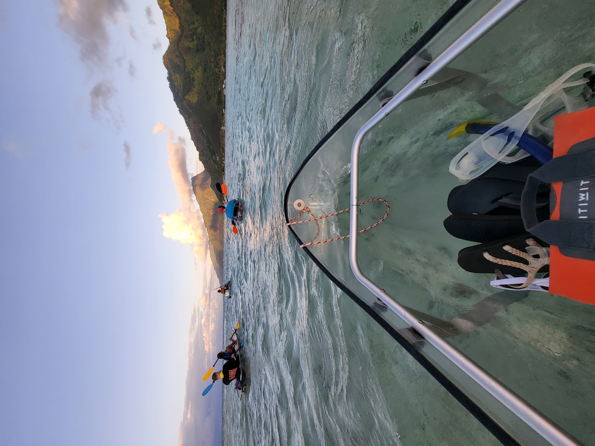

Photo by Celina Reeb, taken in 2022. Mo'Orea.

Photo by Celina Reeb, taken in 2022. Mo'Orea.

Photo by Celina Reeb, taken in 2022. Mo'Orea.


Explore all that our beautiful island has to offer. From mountain peaks to rolling valleys, there's something for everyone.
Whether you're seeking adventure or relaxation, Taniti's diverse landscape offers unforgettable experiences for every type of traveler.